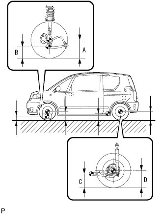
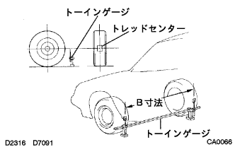
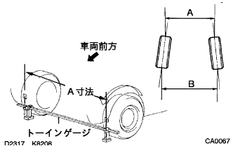
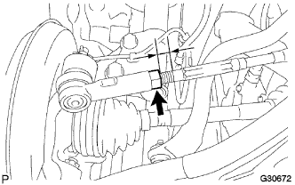
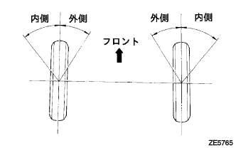
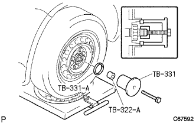
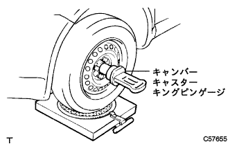

Front wheel alignment adjustment |
| 1. Tire inspection |
| 2. Car high inspection |
|  |
Move the corner of the vehicle up and down widely, calm down the suspension, and check the vehicle height.
| Tire size | A Dimension -B Dimension [mm] | D Dimension-C dimensions [mm] |
|---|---|---|
| 175/70R14 | 105 | 35 |
| 3. Side slip inspection |
Check the side slip with a side slip tester.
In the case of outside the reference value, check the wheel alignment.
| 4. Toin inspection |
Shake the vehicle and stabilize the vehicle.
Push the vehicle straight and move forward to move forward.
|  |
The guideline of the toein gauge is set on the back of the tire according to the front wheel axis center height.
The tread center is applied to the rear of each front tire, and the distance between the marks (B dimensions) is measured.
Press the vehicle slowly to move forward and rotate the front wheels 180 °.
|  |
The distance between the marks (A dimension) is measured in the front of the vehicle.
Seeking to in.
| 5. Tour -in adjustment |
|  |
Measure the length of the screw part of the left and right rack ends.
Remove the rack boots clip.
Loosen the tie rod end rock nut.
If the left and right differences between the rack end screws are not the standard, make adjustments.
If the measured value of the to -in is out of the out side, adjust the rack end with the shorter dimensions in the direction of extending.
If the measured value of the to -in is out of the in -side, adjust the rack end with the longer dimensions.
Check the toe -in again.
Turn the left and right rack ends in the opposite direction of each and adjust so that the to -in enters within the reference value.
Tighten the tie rod end rock nut.
 |
Use the pliers to attach the clip to the range of the figure.
| 6. Wheel cut angle inspection |
Set the turning radius gauge.
|  |
Inspect the cutting angle of the wheel.
| Inside (inspection range) | Outside (reference) |
|---|---|
| 39 ° ± 2 ° | 33 ° |
| 7. Camber, casters, king pin angle inspection |
Set the turning radius gauge.
Remove the wheel cap or center ornament.
|  |
Attach the front wheel alignment attachment and wheel alignment adapter to the front hub.
|  |
Attach the tip of the center rod of the gauge according to the bolt center of the attachment.
Inspect camber, casters and king pin angles.
| Camber | caster | King pin angle |
|---|---|---|
| -0 ° 45 '± 45' | 2 ° 00 '± 45' | 10 ° 30 '± 45' |
Remove the camber caster kinging pin and attachments.
Attach a wheel cap or center ornament.
| 8. Camber adjustment |
Jack the vehicle and remove the front tire.
 |
Remove the bolt and front brake Flexible hose No.1 And the speed sensor FR is separated from the front shock absorber W/coil spring.
 |
Remove two mounting nuts on the shock absorbarower side.
Temporarily attach the nut.
 |
Move the lower side of the shock absorber and adjust the camber with the rubber of the bolt and the bolt hole in the steering knuckle.
Tighten the nut.
|
Bolt, front brake Flexible hose No.1 And the speed sensor FR is attached to the front shock absorber W/coil spring.
Attach the front tire.
Jack the vehicle, shake up and down several times, and calm down the suspension.
Check the camber.
In the case of the reference value, the toe -in inspection should be performed.
In the case of outside the reference value, jack up and remove the front tire, and front brake frexicable hose No.1) The following tasks are performed by separating the speed sensor FR from the front shock absorber W/M coil spring.
 |
Remove two and two bolts on the shock absorbarower side.
  |
Select two adjusting bolts and insert them from the front of the vehicle.
| Camber adjustment amount | Set bolt | 90105-14146 | 90105-14147 |
|---|---|---|---|
| -1 ° 00 '--45' | 1, 2 | ||
| -45 '--30' | 1 | 2 | |
| -30 '--15' | 1 | 2 | |
| -15 ' -0' | 1 | 2 | |
| 0'-15 ' | 1 | 2 | |
| 15'- 30 ' | 1 | 2 | |
| 30'- 45 ' | 1 | 2 | |
| 45 ' -1 ° 00' | 1, 2 |
| Part number | Bolt diameter [mm] | Adjustment | identification |
|---|---|---|---|
| 90105-14146 | 13 | ± 15 ' | A in the figure |
| 90105-14147 | 12 | ± 30 ' | B in the figure |
|
Attach 2 nuts.
|
Bolt, front brake Flexible hose No.1 And the speed sensor FR is attached to the front shock absorber W/coil spring.
Attach the front tire.
Jack the vehicle, shake up and down several times, and calm down the suspension.
Check the camber again.
Inspect the toin.
Check the side slip.